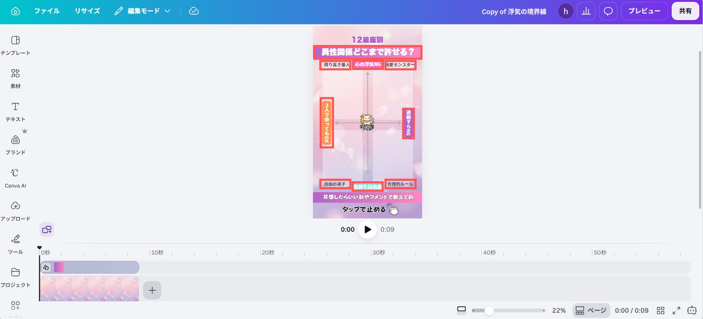
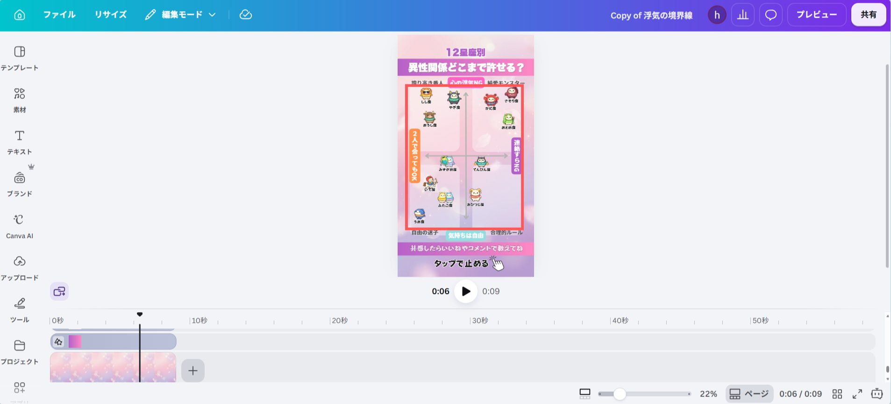
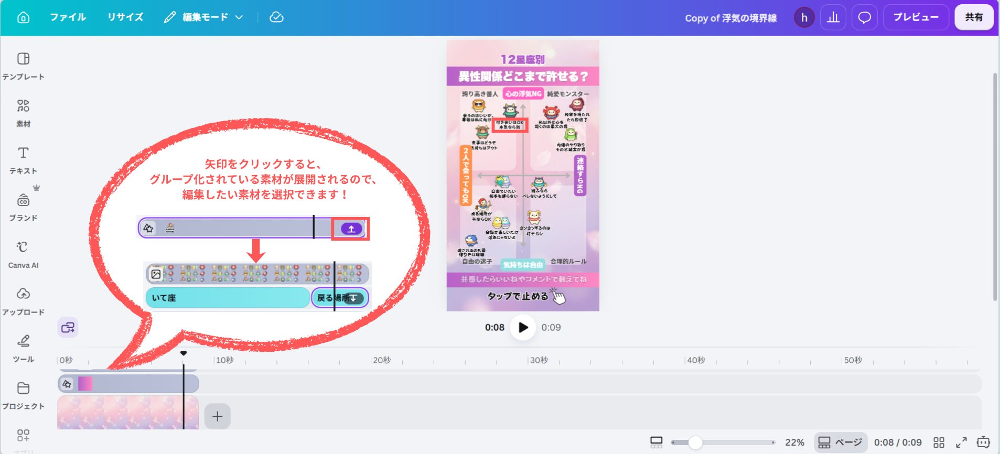

✦ どんな動画ができる？
縦軸×横軸の2軸チャートに、12星座を4つのゾーンに振り分けて発表する診断動画です。 テーマ・軸ラベル・ゾーン名・一言はご自身で自由に決めて入力していただきます。
▲ 右が完成イメージ（実際に動く見本です）
▲ これが完成イメージ（実際に動く見本です）
テンプレを自分用にコピー
まずは下のボタンからテンプレートを開きます。開いたら 「テンプレートを使用」 （または右上の … →「コピーを作成」）を押して、 あなたのCanvaの中に複製しましょう。
🎨 テンプレートを開く⚠ ここ大事！
元のテンプレートに直接書き込まず、必ず「コピー」してから編集してください。 コピーを作れば、何度でも作り直せます。※Canvaのアカウントが必要です（無料でOK）。
AIに鑑定文を考えてもらう
テーマ・軸ラベル・ゾーン名・12星座それぞれの一言を1から考えるのは大変なので、下のプロンプトを ChatGPTやClaudeなど、お使いのAIチャットに貼ってみてください。 診断の中身を一気に考えてくれます。
💡 これはCanvaを自動操作するものではありません
あくまで文章のアイデア出し用です。AIが出してくれた内容を、次のSTEP3〜5でご自身の手でCanvaに入力していきます。占い動画用の「12星座別 分布図診断」のテーマと中身を考えてください。 ▼ 背景 縦軸×横軸の2軸チャートに、12星座を4つのゾーンに振り分けて発表する診断動画です。 （例：テーマ「好きな人への近づき方」なら、縦軸＝ストレートに出す⇄遠回しに匂わす、横軸＝相手に合わせる⇄マイペース、という具合） ▼ 作ってほしいもの ・「◯◯どこまで許せる？」「◯◯タイプ診断」のようなバズりやすいテーマを1つ ・縦軸ラベル（上下）と横軸ラベル（左右）：各6文字以内 ・4つのゾーン名（4つの角につけるタイプ名）：各6文字以内 ・12星座（おひつじ座〜うお座）を4ゾーンに3個ずつ均等に振り分け ・各星座の一言（そのタイプが伝わる一言、2行以内・1行15文字程度） ▼ 出力してほしい形式 ■テーマ：（テーマ名） 縦軸：（上のラベル）⇄（下のラベル） 横軸：（左のラベル）⇄（右のラベル） 【（ゾーン名1）】◯◯座・◯◯座・◯◯座 【（ゾーン名2）】◯◯座・◯◯座・◯◯座 【（ゾーン名3）】◯◯座・◯◯座・◯◯座 【（ゾーン名4）】◯◯座・◯◯座・◯◯座 （星座ごとの一言） おひつじ座：（2行以内・1行15文字程度） おうし座：（2行以内・1行15文字程度） ふたご座：（2行以内・1行15文字程度） かに座：（2行以内・1行15文字程度） しし座：（2行以内・1行15文字程度） おとめ座：（2行以内・1行15文字程度） てんびん座：（2行以内・1行15文字程度） さそり座：（2行以内・1行15文字程度） いて座：（2行以内・1行15文字程度） やぎ座：（2行以内・1行15文字程度） みずがめ座：（2行以内・1行15文字程度） うお座：（2行以内・1行15文字程度） ▼ お願い ・軸ラベル・ゾーン名は6文字以内、一言は2行以内（1行15文字程度）を厳守してください（テンプレの枠からはみ出します） ・12星座は必ず4ゾーンに3個ずつ均等に振り分けてください
※出てきた内容が気に入らなければ「ゾーン名だけ考え直して」のように追加でお願いすればOKです。
タイトル・軸ラベル・ゾーン名を手入力する
STEP2でAIが考えてくれた内容を、テンプレの決まった場所に打ち替えていきます。
📄 打ち替える場所
- ①タイトル（画面上部、1箇所）
- ②縦軸ラベル（画面の上と下、2箇所）
- ③横軸ラベル（画面の左と右、2箇所）
- ④4つのゾーン名（4つの角、4箇所）
✍️ 文字の打ち替え方（Canvaの基本操作）
- 1
書き換えたい文字をダブルタップ（ダブルクリック）する
- 2
文字が選択された状態になるので、そのまま新しい文字を入力（自動で元の文字と入れ替わります）
- 3
枠の外をタップして確定
⚠ 文字数の目安
軸ラベル・ゾーン名が長すぎると枠からはみ出してしまいます。6文字以内を目安に、はみ出していないか確認しながら進めてください。
12星座を4ゾーンに配置し、キャラ画像を差し替える
12星座のキャラは、それぞれ「画像＋星座名＋鑑定文」の3点セットでグループ化されています。 アニメーションは常にスタート地点（＝配置した位置）に戻ってくるように設定されているので、 STEP2で決めたゾーン分けに合わせてキャラのグループごとドラッグして目的のゾーンへ移動させてください。
🖼 キャラ画像を差し替えたいとき（任意）
- 1
差し替えたいキャラ画像をクリックして選択
- 2
お好きな画像を、選択したキャラ画像の上にドラッグ＆ドロップすると差し替わります
- 3
位置やサイズがズレたら、周りに合わせて微調整してください
💡 ゾーン分けはご自由に
「3個ずつ均等」が基本ですが、テーマに合わせて自由に振り分けていただいてOKです。
各星座の一言鑑定文を手入力する
STEP3と同じ操作（ダブルタップして打ち替え）で、12星座それぞれの近くにある一言を、STEP2でAIが考えてくれた内容に書き換えてください。
⚠ 文字数の目安
一言が長すぎると枠からはみ出してしまいます。2行以内（1行あたり15文字程度）を目安に、はみ出していないか都度確認しながら進めてください。
背景を変える（お好みで）
🙌 必要な場合だけでOK
テンプレのままでもキレイに仕上がります。雰囲気を変えたいときだけ、下の手順で背景を差し替えてください。-
1
背景にしたい画像を選んで画面に表示させたら、「・・・」をタップ
-
2
「画像を背景として設定」をタップ
-
3
元の背景を削除：いらなくなった元の背景を選んでゴミ箱マークで消す
📱 実際の画面（スワイプで順番に見れます）

① 「・・・」→「画像を背景として設定」

② 不要になった元の背景を削除
MP4でダウンロード
すべて入力できたら、最後に動画として書き出します。
- 1
右上の 「共有」 をタップ
- 2
出てきた画面の 「ダウンロード」 アイコンを選択
- 3
ファイルの種類＝ 「MP4形式の動画」、画質＝ 「1080p HD」 を確認
- 4
「ダウンロード」ボタンを押す
📱 実際の画面（スワイプで順番に見れます）

① 「共有」→「ダウンロード」アイコン

② MP4形式を確認して「ダウンロード」
完成です！🎉
お疲れさまでした。あとはインスタに投稿するだけ✨